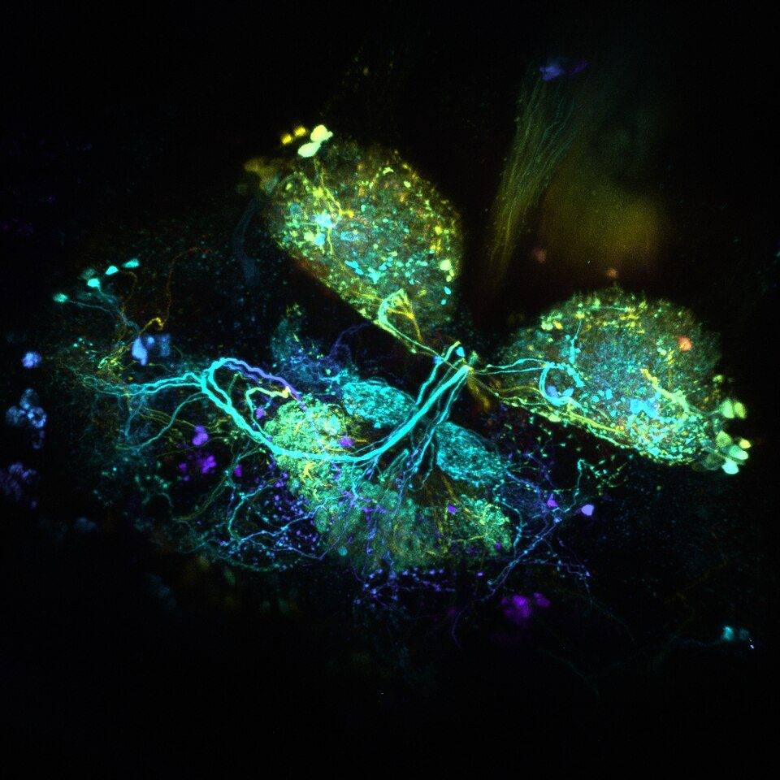
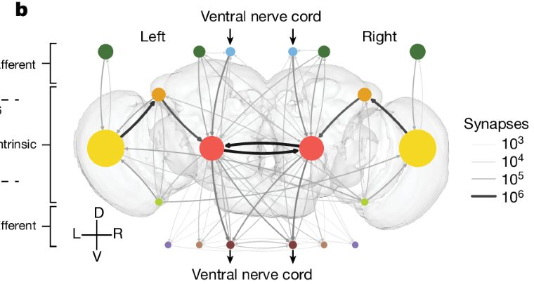
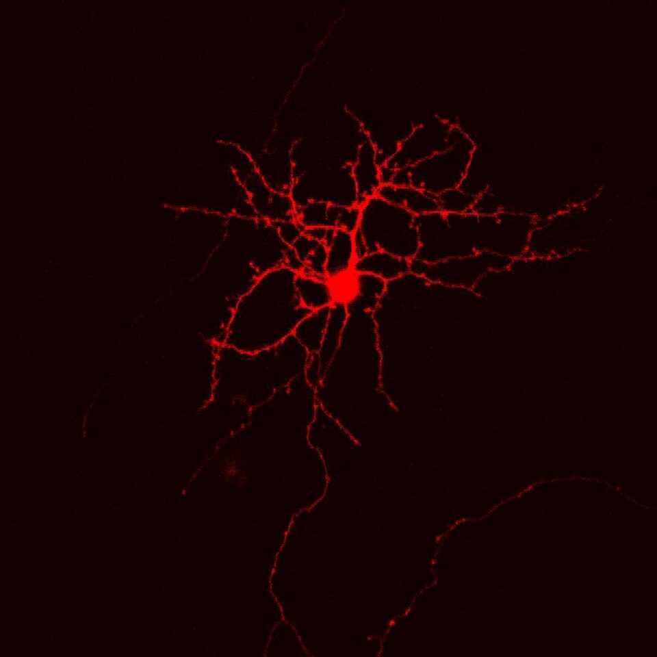
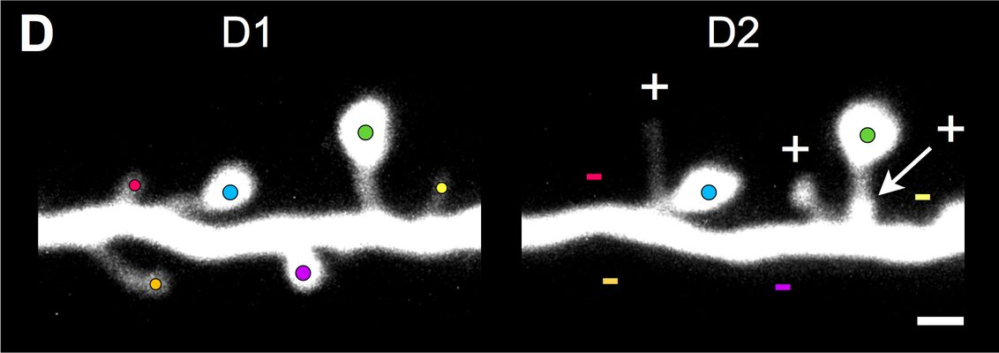
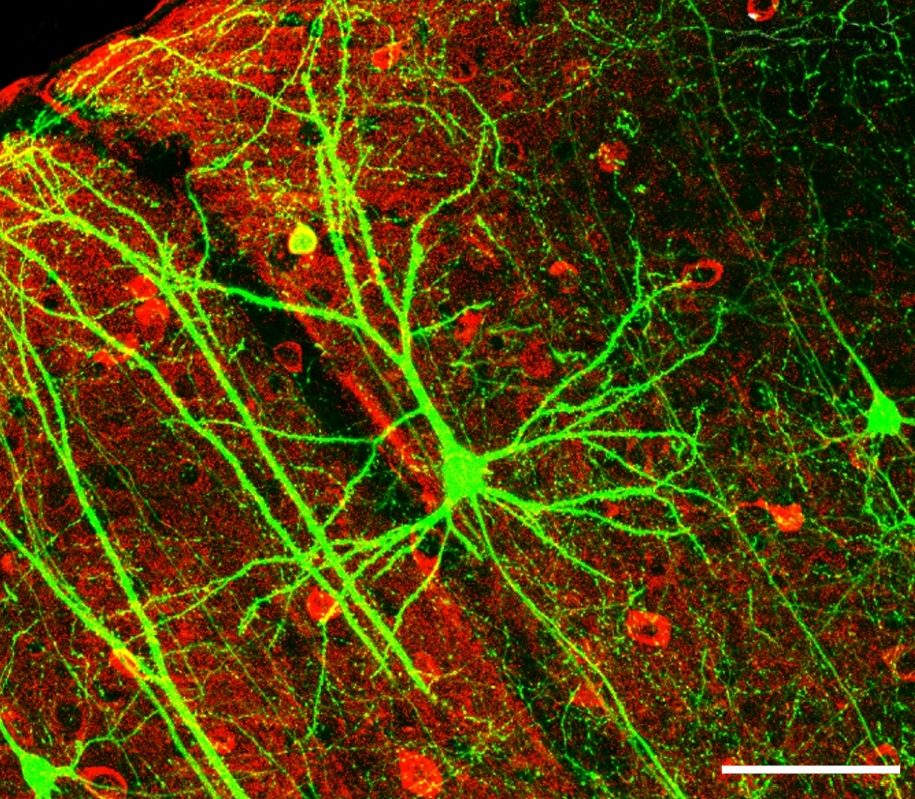
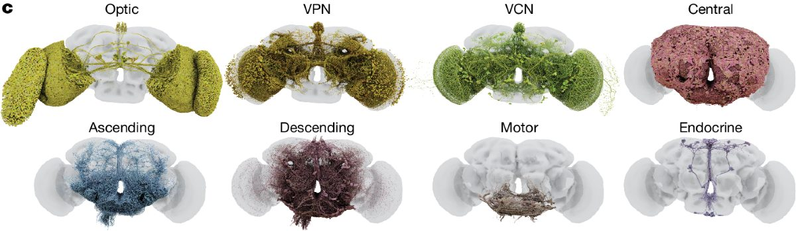
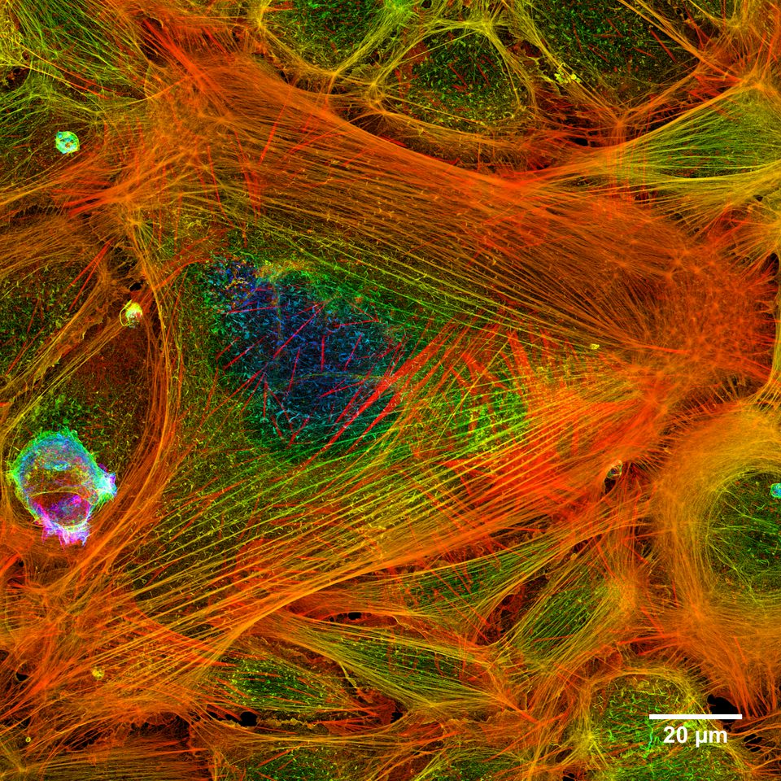
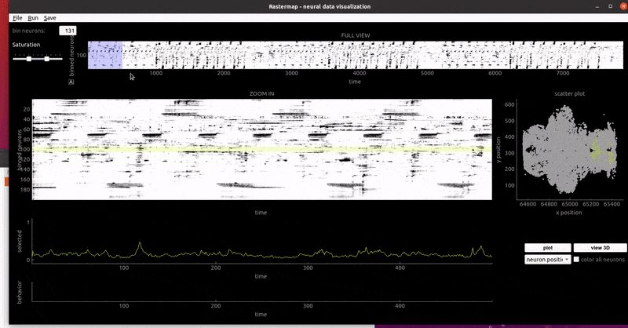
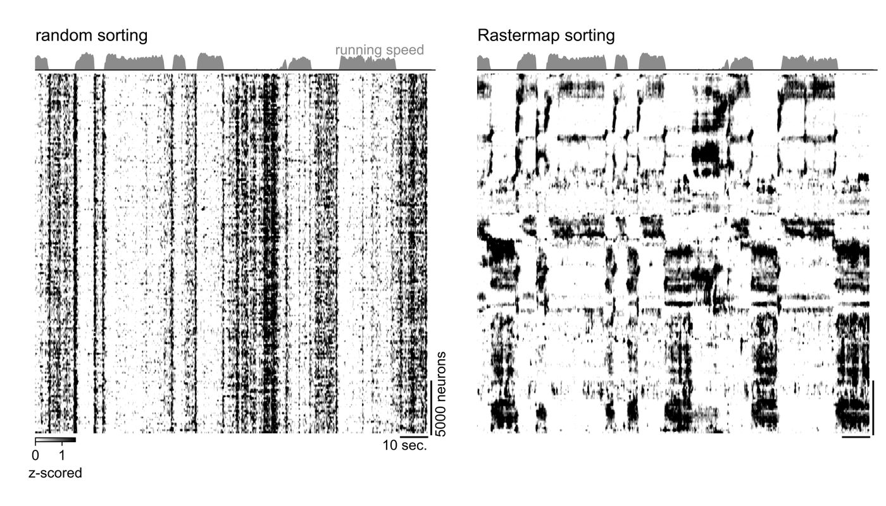
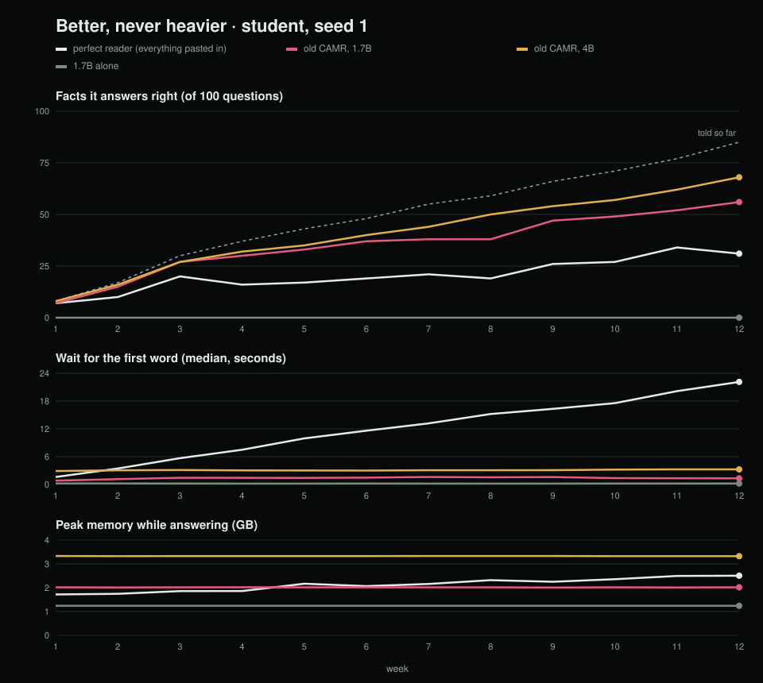

Plan · 2 November 2026
Better, never heavier.
A small language model on your MacBook Air whose memory lives on the SSD and grows. It keeps getting better at your life without getting slower or bigger.

Mark it up. Comment on anything you'd change, cut or question, and I'll update the plan. Building started on 2 November: the code is in ~/Developer/engram, and its technical calls are in DECISIONS.md.
01 · Measured on your laptop
RAM is where the model thinks; the SSD is where memory lives. The SSD is fast only when it's read in big pieces, and the fanless Air slows down under long heavy work. These numbers are the MacBook Air M4. Since 3 November engram runs on a MacBook Pro M5 Pro, which reads text about 8× faster and its SSD about 4× faster (12 GB/s).
| Rule | Why |
|---|---|
| Remember first, then talk | Reading the SSD while the model writes slows writing by 21%. Fetch memory in one burst before answering. |
| Big boxes, not scraps | Related memories are stored together and read as whole rooms of 1 MB or more. That's 75× faster than scraps. |
| Same allowance per question | For example 256 MB, about 0.1 s here, sized for the slowest Mac we support so it feels the same everywhere. |
| Fixed RAM budget, about 5 GB | Model 2 GB, memory in use 2 GB, always-on core 0.5 GB. The rest stays free for you, so nothing freezes. |
| Heavy learning on the charger | Steady 80–90% is fine when you're away. While you're working, jobs stay under a minute. |
02 · The memory
Memory is a 3D space. Position is meaning, so similar things sit together. Height is how distilled it is: moments at the bottom, facts in the middle, concepts on top.


One memory with two faces: the vectors the model reads, and the words you read.
1 MB or more of related nodes stored side by side on the SSD, fetched in one read.
A link between rooms. It thickens each time both rooms are used together and fades when they're not.
The most-used rooms, always in RAM. They never dim.
03 · How the model reads
When the model reads anything, it writes itself notes inside its layers. Saved to the SSD and put back later, those notes let it answer without rereading. I tested this with one fact hidden in a pile of memories; both ways answered correctly.
Fast but huge, so notes are kept only for what's fresh. Everything on the desk also costs every word, so the desk has to stay small.
| Form | What it is | Good at | Cost |
|---|---|---|---|
| Notes | The model's own saved notes, for fresh moments | Exact, instant | Huge; recent and busy rooms only |
| Shorthand | One small vector per fact, about 2 KB, made during sleep | A million facts fit in about 2 GB | Needs the translation layer |
| Words | The original text: the node's human face | Smallest, kept forever | Slow to read; used when exactness matters |
The translation layer: a small network, trained once, that turns shorthand back into notes the frozen model already understands. The model itself never changes.
04 · Sleep
It naps on the charger while you're away: about 2 minutes for a normal day, about 10 minutes for a day with a 100-page PDF. It stops the moment you're back.

| Used | Fades 5% a day; each use adds strength |
|---|---|
| Once | Leaves after about 6 weeks |
| Monthly | Survives |
| Weekly | Lives indefinitely |
| Pinned | Never fades: "remember this" and your corrections |
Faded memories leave the brain, but their words stay in the archive and can come back. Only you delete forever.
First it tries to resolve the doubt from evidence. If it can't, it keeps both versions with dates and asks in one line only when that memory is needed. Unsure nodes get a dashed outline.
05 · The brain view
Every light is a real event. Nodes that were picked up but not used show as outlines; only nodes it actually leaned on glow. Colour has one meaning at a time, switched like a microscope's channels.





A see-through outline of the whole memory, always there.
Areas, then rooms, then cells. Only lit parts are drawn in detail.
Side by side, with + and − marking what was born and what died.
The engine writes a tiny event log and the view replays it, so drawing never slows the model.
06 · The proof
Three scripted 12-week lives (a student, a farm-cooperative manager, a developer), deliberately messy, plus the public LongMemEval benchmark. Each simulated day ends in a nap. A full life runs in about an evening, and anyone can re-run it.
| Claim | Test | Wrong if |
|---|---|---|
| It gets better | The same 100-question quiz every week | The line goes flat while memory keeps growing |
| It doesn't get heavier | Grow from 1,000 to 1,000,000 facts | Time to first word or RAM climbs |
| It doesn't lose things | Week-1 facts asked again in week 12 | Old answers fade faster than the 5% rule predicts |
| It stays honest | Questions about things it was never told | False memories rise as it grows |
Qwen3-1.7B alone · the old CAMR with text notes · engram on 1.7B · Qwen3-4B with the old CAMR · a perfect reader with everything pasted in (small sizes only).
Growth (the thesis image) · scale · the forgetting curve · a week-1 vs week-12 brain time-lapse. Every run is saved as a dated test record.

07 · Build order
The ruler comes first, so every later step is measured from day one.
08 · Watch list
Shrinking notes 4× produced nonsense in a quick test. Papers say it works, so it gets a proper re-test in step 1. If it fails, notes stay full size and fewer fit.
Each room is saved as if it were alone, so placed together they can confuse order. The known fix re-reads a small slice of each; its cost is measured in step 1.
In the old CAMR, facts baked into weights scored about 13%, while readable notes scored about 72–75%. The words archive and the sleep quiz are the guard.
The translation layer is the one long job. It runs only on the charger, saving progress often so it can stop and resume.
Notes are about 29,000× the text. They get a cap (for example 20 GB), and sleep demotes older notes to shorthand.
09 · Decided